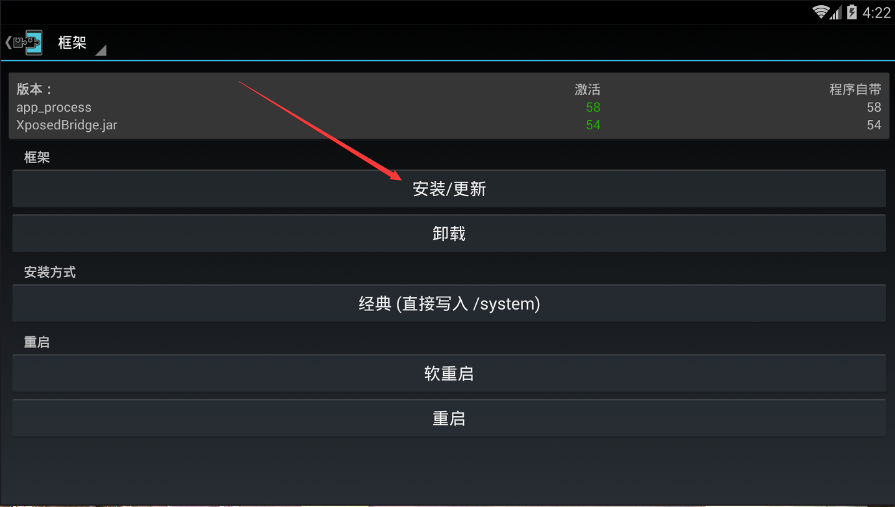
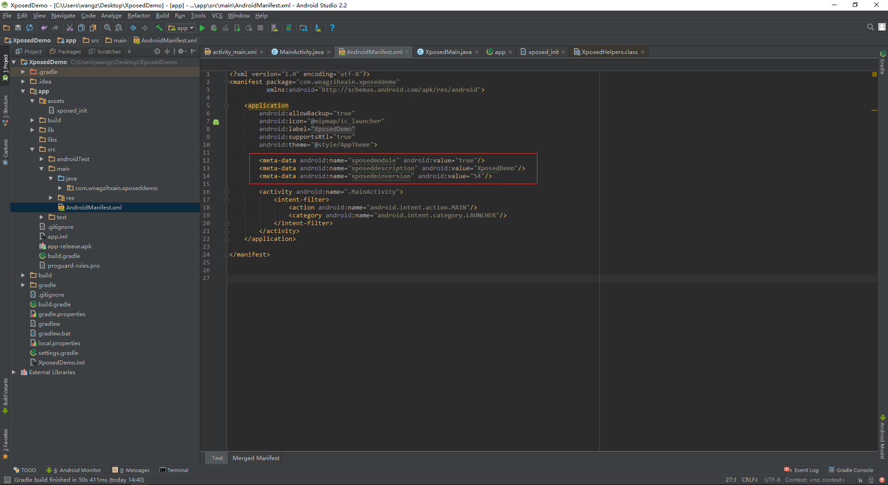
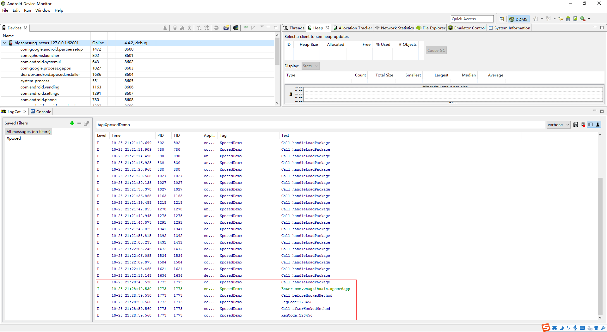

Author：wnagzihxain
Mail：tudouboom@163.com
本文目的是讲解Android平台的Hook技术，包括且不仅限于Xposed框架，需要各位同学有一定的Android开发能力
Xposed是Android平台一个非常著名的Hook框架，很多玩机的同学都比较喜欢，但是也有部分同学是没有玩过这些东西的，所以我会从代码层面来详细的讲解Hook技术以及实现
先来科普一下Hook的概念：Hook是钩子的意思，Android应用在运行的时候会调用很多的函数，自身的函数，系统的函数，我们可以使用钩子去钩住我们想要钩住的函数，然后使程序跳到我们自己写的函数逻辑里去执行
讲到这里，有同学就会疑惑：如何钩住？用什么去钩？要写代码吗？
带着疑惑，我们来看如何实现使用Xposed框架去实现Hook
手机是一定要Root的，然后安装上e.robv.android.xposed.installer_v33_36570c.apk，使用Xposed的形式是先安装这个Xposed Installer，然后各种插件以module形式存在
下载地址：http://repo.xposed.info/module/de.robv.android.xposed.installer
官网对Xposed的一些描述
Note that this only works with root access on Android 4.0.3 up to Android 4.4.
Have a look at the support thread for instructions and FAQs.
Author(s): rovo89, Tungstwenty
Support/Discussion URL: http://forum.xda-developers.com/xposed
Source code URL: https://github.com/rovo89/XposedInstaller
Package: de.robv.android.xposed.installer
Version name: 2.7 experimental1
Release type: Experimental (high risk of bugs)
Download: de.robv.android.xposed.installer_v33_36570c.apk (770.28 KB)
Number of downloads: 13,033,207 in total · 11,389 in the last 24 hours
MD5 checksum: 36570c6fac687ffe08107e6a72bd3da7
Uploaded on: Thursday, June 19, 2014 - 15:19
如果Android系统版本是5.0及以上的同学需要下载下面这个版本的Xposed Installer
下载地址：http://forum.xda-developers.com/showthread.php?t=3034811
官网也高能提示了
!!!!!!!!!!!!!!!!!!!!!!!!!!!!!!!!!!!!!!!!!!
For Android 5.0 or higher (Lollipop/Marshmallow), these versions don't work! Use this instead:
http://forum.xda-developers.com/showthread.php?t=3034811
!!!!!!!!!!!!!!!!!!!!!!!!!!!!!!!!!!!!!!!!!!
安装完后，单机打开，安装一下，至于这个安装干了什么后面详细讲

安装完后该重启就重启，想折腾Xposed，重启这事省不了
我们来写个简单的App，功能很简单，输入一个RegCode，然后单击按钮注册的时候进行一个简单的判断
package com.wnagzihxain.xposedapp;
import android.support.v7.app.AppCompatActivity;
import android.os.Bundle;
import android.view.View;
import android.view.inputmethod.EditorInfo;
import android.widget.Button;
import android.widget.EditText;
import android.widget.TextView;
import android.widget.Toast;
public class MainActivity extends AppCompatActivity {
private EditText edittext;
private Button button;
@Override
protected void onCreate(Bundle savedInstanceState) {
super.onCreate(savedInstanceState);
setContentView(R.layout.activity_main);
edittext = (EditText) findViewById(R.id.edittext);
button = (Button)findViewById(R.id.button);
button.setOnClickListener(new View.OnClickListener() {
@Override
public void onClick(View v) {
if (checkRegCode(edittext.getText().toString())){
Toast.makeText(MainActivity.this, "You Get it", Toast.LENGTH_SHORT).show();
}
else {
Toast.makeText(MainActivity.this, "Sorry , Try again", Toast.LENGTH_LONG).show();
}
}
});
}
private Boolean checkRegCode(String RegCode){
if (RegCode.equals("vjfnvsdgdsgtnyhbcmdaljfrgohglhg")){
return Boolean.TRUE;
}
return Boolean.FALSE;
}
}
简单粗暴，代码还是很好懂的，看不懂的话建议先去搞搞Android开发的基础吧
这里我们可以看到，我使用的是checkRegCode()方法来校验，这是一个返回值是Boolean的方法，那么我们如果Hook这个方法，直接返回true不就可以绕过校验码？
来看如何写对应的Xposed插件
下载XposedBridgeApi-54.jar
下载地址: http://forum.xda-developers.com/xposed/xposed-api-changelog-developer-news-t2714067
新建一个Android Studio工程，创建完后，在工程里新建一个lib文件夹，导入XposedBridgeApi-54.jar文件
然后我们学习一下Android Studio引用第三方jar库的知识
来自：Android Studio 里面的引用第三方库总结，以及compile、provided使用
方式:1：它就会自动把这个包下载下来，并且引用它，节省Git空间，而且修改版本也很方便
compile 'com.android.support:support-v4:23.3.0'
方式2：引用libs下所有jar包
compile fileTree(dir: 'libs', include: ['*.jar'])
方式3：引用一个jar
compile files('libs/fastjson-1.1.53.android.jar')
方式4：引用一个aar文件，注意并不能像方式2那样自动引用全部的aar，而需要对每个aar分别进行引用
compile(name: 'aar_file_name', ext: 'aar')
方式5：引用库类型的项目
compile project(':xxxsdk')
方式6：仅仅在编译时使用，但最终不会被编译到apk或aar里
provided files('libs/glide-3.7.0.jar')
那么我们这里只是编译需要，所以我们在导入XposedBridgeApi-54.jar后需要修改一下build.gradle配置文件
这个位置原来是
compile files('lib/XposedBridgeApi-54.jar')
修改为
provided files('lib/XposedBridgeApi-54.jar')
如下
创建一个类，我这里命名为XposedMain，命名随意，喜欢就好
创建一个assets文件夹，然后添加一个xposed_init文件，内容是我们编写的XposedMain类的路径，这个代表着module的入口类
com.wnagzihxain.xposeddemo.XposedMain

然后修改AndroidManifest.xml文件
添加这三行
<meta-data android:name="xposedmodule" android:value="true"/>
<meta-data android:name="xposeddescription" android:value="XposedDemo"/>
<meta-data android:name="xposedminversion" android:value="54"/>
我来解释下都是什么意思：

开始写代码
首先我们添加一个接口
public class XposedMain implements IXposedHookLoadPackage{
}
这个接口我们可以跟进定义
package de.robv.android.xposed;
import de.robv.android.xposed.IXposedMod;
import de.robv.android.xposed.callbacks.XC_LoadPackage;
import de.robv.android.xposed.callbacks.XC_LoadPackage.LoadPackageParam;
public interface IXposedHookLoadPackage extends IXposedMod {
void handleLoadPackage(LoadPackageParam var1) throws Throwable;
public static class Wrapper extends XC_LoadPackage {
private final IXposedHookLoadPackage instance;
public Wrapper(IXposedHookLoadPackage instance) {
this.instance = instance;
}
public void handleLoadPackage(LoadPackageParam lpparam) throws Throwable {
this.instance.handleLoadPackage(lpparam);
}
}
}
可以看到这个接口里面有一个方法要重写
void handleLoadPackage(LoadPackageParam var1) throws Throwable;
回到XposedMain，我们来重写这个方法
public class XposedMain implements IXposedHookLoadPackage{
@Override
public void handleLoadPackage(XC_LoadPackage.LoadPackageParam loadPackageParam) throws Throwable {
Log.i("XposedDemo", "Call handleLoadPackage");
}
}
我们先实现一下在调用这个方法的时候打印日志
Log.i("XposedDemo", "Call handleLoadPackage");
来看这个方法的参数
XC_LoadPackage.LoadPackageParam loadPackageParam
跟到定义
public abstract void handleLoadPackage(XC_LoadPackage.LoadPackageParam var1) throws Throwable;
public static class LoadPackageParam extends Param {
public String packageName;
public String processName;
public ClassLoader classLoader;
public ApplicationInfo appInfo;
public boolean isFirstApplication;
public LoadPackageParam(CopyOnWriteSortedSet<XC_LoadPackage> callbacks) {
super(callbacks);
}
}
可以看到这个loadPackageParam对象有非常多的属性，比如packagename，classLoader等
回到XposedMain，既然看了loadPackageParam有那么多的属性，我们这里打印日志的内容也就多了起来
我们通过枚举包名，当loadPackageParam的包名为"com.wnagzihxain.xposedapp"的时候，我们就打印出日志
public class XposedMain implements IXposedHookLoadPackage{
@Override
public void handleLoadPackage(XC_LoadPackage.LoadPackageParam loadPackageParam) throws Throwable {
Log.i("XposedDemo", "Call handleLoadPackage");
if (loadPackageParam.packageName.equals("com.wnagzihxain.xposedapp")){
Log.i("XposedDemo", "Enter " + loadPackageParam.packageName);
}
}
}
然后来看一个很重要的方法
public static Unhook findAndHookMethod(String className, ClassLoader classLoader, String methodName,
Object... parameterTypesAndCallback) {
return findAndHookMethod(findClass(className, classLoader), methodName, parameterTypesAndCallback);
}
具体的实现
public static Unhook findAndHookMethod(Class<?> clazz, String methodName, Object... parameterTypesAndCallback) {
if(parameterTypesAndCallback.length != 0 &&
parameterTypesAndCallback[parameterTypesAndCallback.length - 1] instanceof XC_MethodHook) {
XC_MethodHook callback = (XC_MethodHook)parameterTypesAndCallback[parameterTypesAndCallback.length - 1];
Method m = findMethodExact(clazz, methodName, getParameterClasses(clazz.getClassLoader(),
parameterTypesAndCallback));
return XposedBridge.hookMethod(m, callback);
} else {
throw new IllegalArgumentException("no callback defined");
}
}
参数依次是类的路径，classLoader，方法名，然后是方法的参数类型，最后是一个回调函数
根据我们使用的测试样本以及需要Hook的方法情况，代码如下
public class XposedMain implements IXposedHookLoadPackage{
@Override
public void handleLoadPackage(XC_LoadPackage.LoadPackageParam loadPackageParam) throws Throwable {
Log.i("XposedDemo", "Call handleLoadPackage");
if (loadPackageParam.packageName.equals("com.wnagzihxain.xposedapp")){
Log.i("XposedDemo", "Enter " + loadPackageParam.packageName);
findAndHookMethod("com.wnagzihxain.xposedapp.MainActivity", loadPackageParam.classLoader, "checkRegCode",
String.class, new myHookMethod());
}
}
}
这个回调函数我们来实现一下
这里重写了两个很常见的方法
protected void beforeHookedMethod(XC_MethodHook.MethodHookParam param) throws Throwable {
}
protected void afterHookedMethod(XC_MethodHook.MethodHookParam param) throws Throwable {
}
class myHookMethod extends XC_MethodHook{
@Override
protected void beforeHookedMethod(XC_MethodHook.MethodHookParam param) throws Throwable {
Log.i("XposedDemo", "Call beforeHookedMethod");
Log.i("XposedDemo", "RegCode:" + param.args[0]);
}
@Override
protected void afterHookedMethod(XC_MethodHook.MethodHookParam param) throws Throwable {
Log.i("XposedDemo", "Call afterHookedMethod");
Log.i("XposedDemo", "RegCode:" + param.args[0]);
Boolean result = (Boolean)param.getResult();
result = true;
param.setResult(result);
}
}
意思也比较好懂，对于参数，我们跟到定义里面
我在这里先getResult，然后重新给Result赋值，再setResult，这两个方法在定义里面都可以看得到，这里有一个代码实现的地方要注意，在getResult的时候对象要进行一个类型的转换，转换成的类型由返回值的类型决定
public static class MethodHookParam extends Param {
public Member method;
public Object thisObject;
public Object[] args;
private Object result = null;
private Throwable throwable = null;
boolean returnEarly = false;
public MethodHookParam() {
}
public Object getResult() {
return this.result;
}
public void setResult(Object result) {
this.result = result;
this.throwable = null;
this.returnEarly = true;
}
public Throwable getThrowable() {
return this.throwable;
}
public boolean hasThrowable() {
return this.throwable != null;
}
public void setThrowable(Throwable throwable) {
this.throwable = throwable;
this.result = null;
this.returnEarly = true;
}
public Object getResultOrThrowable() throws Throwable {
if(this.throwable != null) {
throw this.throwable;
} else {
return this.result;
}
}
}
那么代码都写完了，安装上
打开，把后面框框那个勾上，提示重启，那么就重启
重启完后，打开Android Device Monitor
如果是夜神模拟器的话需要执行下面这条命令，其余模拟器请对应相应的端口，不过还是真机大法好
C:\Users\wangz>adb connect 127.0.0.1:62001
connected to 127.0.0.1:62001
可以看到Android Device Monitor已经打印出了很多的日志，我输入了123456，看到下面输出了Hook代码里相应的日志

执行流程也是比较清楚
10-28 21:28:40.530: I/XposedDemo(1773): Enter com.wnagzihxain.xposedapp
10-28 21:28:59.550: D/XposedDemo(1773): Call beforeHookedMethod
10-28 21:28:59.560: D/XposedDemo(1773): RegCode:123456
10-28 21:28:59.560: D/XposedDemo(1773): Call afterHookedMethod
10-28 21:28:59.560: D/XposedDemo(1773): RegCode:123456
然后我们来看效果

可以看到我们Hook后设置返回值为true，现在从Toast的情况来看，确实是进入了校验正确的分支